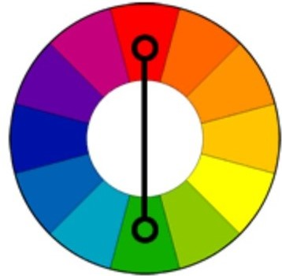
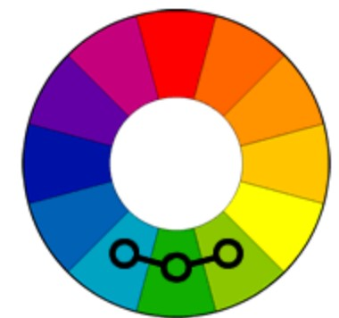
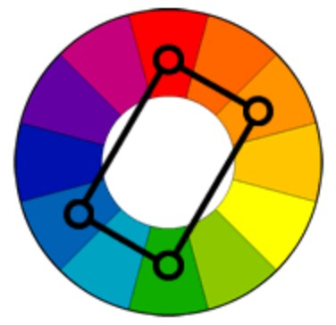
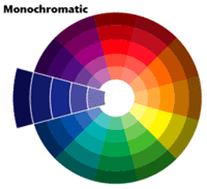
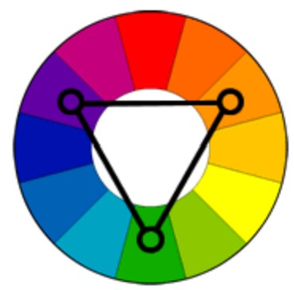
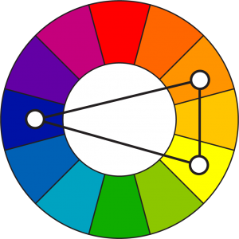

Complementary Colors that are opposite each other on the color wheel
are considered to be complementary colors (example: red and green).
The high contrast of complementary colors creates a vibrant look
especially when used at full saturation. This color scheme must be
managed well so it is not jarring. Complementary colors are tricky to
use in large doses, but work well when you want something to stand
out. Complementary colors are really bad for text.
Analogous color scheme
Analogous color schemes use colors that are next to each other on the
color wheel. They usually match well and create serene and comfortable
designs. Analogous color schemes are often found in nature and are
harmonious and pleasing to the eye. Make sure you have enough contrast
when choosing an analogous color scheme. Choose one color to dominate,
a second to support. The third color is used (along with black, white
or gray) as an accent.
Tetradic color
scheme The tetradic color scheme uses four colors arranged into two
complementary pairs. This rich color scheme offers plenty of
possibilities for variation. Tetradic color schemes works best if you
let one color be dominant. You should also pay attention to the
balance between warm and cool colors in your design.
Monochromatic
colors are all the colors (tones, tints, and shades) of a single hue.
Monochromatic color gradient on color wheel Monochromatic color
schemes provide opportunities in art and visual communications design
as they allow for a greater range of contrasting tones that can be
used to attract attention, create focus and support legibility. The
use of a monochromatic color provides a strong sense of visual
cohesion and can help support communication objectives through the use
of connotative color.
Triadic color scheme
A triadic color scheme uses colors that are evenly spaced around the
color wheel. Triadic color schemes tend to be quite vibrant, even if
you use pale or unsaturated versions of your hues. To use a triadic
harmony successfully, the colors should be carefully balanced - let
one color dominate and use the two others for accent.
Split-Complementary
color scheme The split-complementary color scheme is a variation of
the complementary color scheme. In addition to the base color, it uses
the two colors adjacent to its complement. This color scheme has the
same strong visual contrast as the complementary color scheme, but has
less tension. The split-complimentary color scheme is often a good
choice for beginners, because it is difficult to mess up.